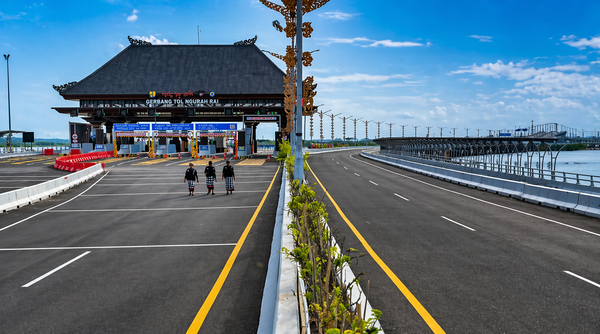
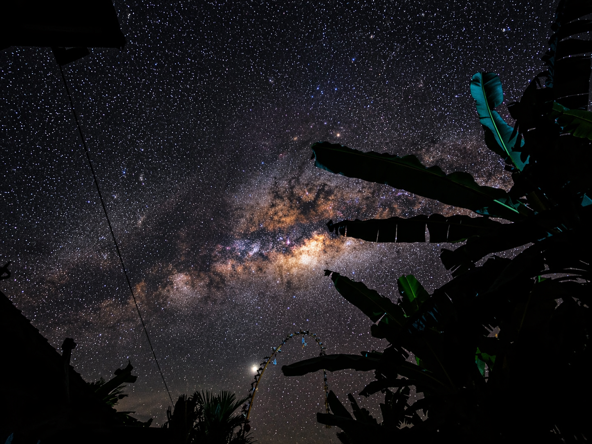
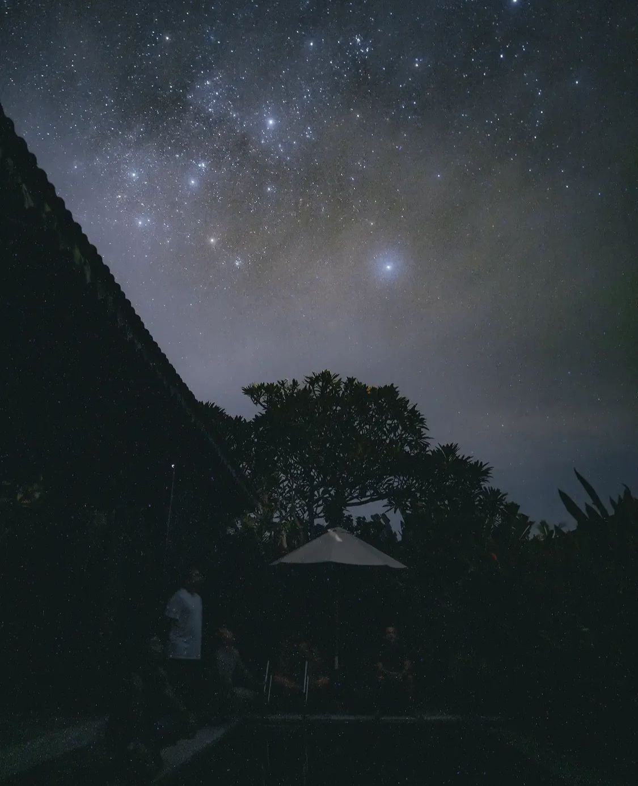

THE DAY OF SILENCE
For one full day, Bali pauses completely no traffic, no lights, no noise creating one of the most unique traditions on Earth.
Nyepi is the Balinese New Year celebrated not with fireworks, but with silence, reflection, and spiritual renewal.
During Nyepi, people observe no fire or lights, no travel, no entertainment, and no unnecessary activity.
Streets become empty, beaches close, airports stop operating, and the island feels calm in a way rarely experienced anywhere else.
Nyepi is a time to cleanse the mind, reconnect with values, and begin the new year in harmony.
Nyepi happens once every year according to the Balinese Saka calendar.
It usually takes place in March.
Search the official Nyepi date for the coming year. Hotels and tourism calendars usually publish it early.
Stay in a hotel or villa with a balcony and experience the rare silence, clean air, and dark night sky.
Buy food, water, and essentials before Nyepi begins.
Visitors are expected to remain inside their accommodation.
With minimal light pollution, Nyepi night can reveal beautiful stars.
This is a sacred day, not only a tourism attraction.


